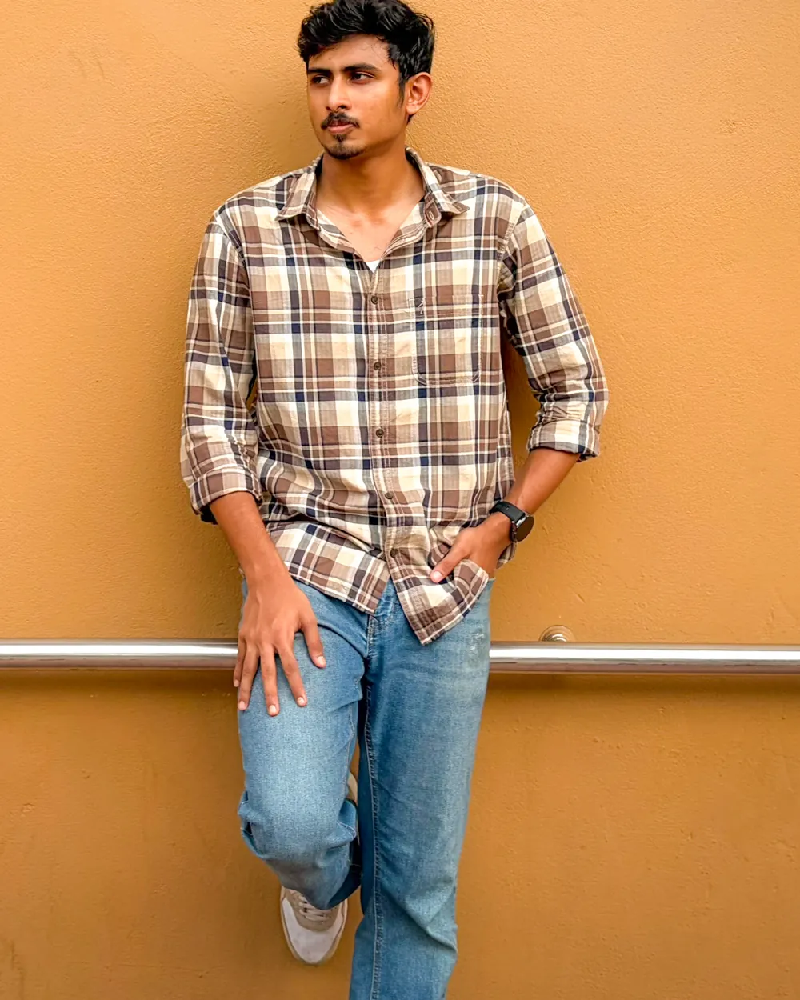
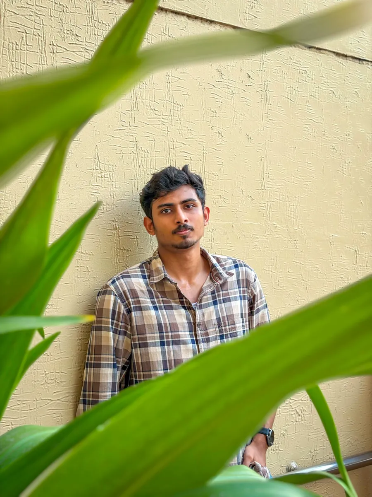

B.Tech CSE (Artificial Intelligence) · 2026
Chris Joseph George
I build AI systems that can explain themselves: retrieval pipelines that check their own answers, models that show why they predict what they predict.
Co-author of an IEEE-published aircraft-engine digital twin. Python, PyTorch, FastAPI, LangGraph.


01 — AboutPractical AI, built to be checked.
I recently completed my B.Tech in Computer Science and Engineering with a specialisation in Artificial Intelligence at Karunya Institute of Technology and Sciences. My projects sit where machine learning meets working software: a self-corrective RAG assistant, a chest X-ray classifier, and a digital twin for predictive maintenance.
I care about the parts that make AI trustworthy: grounding answers in sources, explaining predictions with SHAP and LIME, and wrapping models in clean APIs. Alongside the engineering, I have organised hackathons, run Google Cloud and cybersecurity workshops, and raised sponsorships for a student entrepreneurship cell.
I'm looking for early-career roles in AI/ML engineering and applied research, where I can ship useful systems and keep learning.
02 — Selected workProjects
03 — ToolkitSkills, grouped by what I use them for
- Languages
- Python, SQL, Java
- AI, ML & deep learning
- PyTorch, TensorFlow, Keras, Scikit-learn, XGBoost, SHAP, LIME, Explainable AI
- Generative & agentic AI
- RAG, LangGraph, Agentic AI, LLM integration, Sentence Transformers
- Backend & deployment
- FastAPI, Flask, Streamlit, REST APIs, Google Cloud Platform
- Databases & tools
- PostgreSQL, MySQL, SQLite, MongoDB, Git, GitHub
04 — ExperienceInternships & volunteering
Software Development Intern
Chillar Payment Solutions Pvt Ltd · Kerala
- Improved SQL query performance by 35% through indexing and query refactoring.
- Built FastAPI REST endpoints for backend integration, cutting integration time by 25%.
- Wrote automated unit tests that raised code coverage by 40%.
Networking Intern
Cisco AICTE Virtual Internship · Remote
- Designed and simulated network topologies in Cisco Packet Tracer; trained in routing, switching and network security.
Senior Corporate Relations Coordinator
E-Cell Karunya · Coimbatore
- Built corporate partnerships, contributing to INR 5,00,000+ in sponsorships for entrepreneurship initiatives.
Core Team Member
KarunyaHacks · Coimbatore
- Helped run three university hackathons (200+ participants) and eight AI and web workshops (150+ students).
Google Cloud & Cybersecurity Facilitator
GDSC Karunya · Coimbatore
- Delivered 5+ workshops to 100+ students and mentored 20+ on technical learning and certification prep.
05 — EducationKarunya Institute of Technology and Sciences
B.Tech, Computer Science and Engineering (Artificial Intelligence) · Coimbatore · Aug 2022 – Jul 2026
Coursework: Database Management Systems, Artificial Intelligence, Machine Learning Techniques, Software Engineering, Generative AI, Machine Learning with TensorFlow, Robotic Process Automation.
CertificationsCredentials
- Google Cybersecurity Professional Certificate
- Introduction to Artificial Intelligence — IBM
- PCAP: Programming Essentials in Python — Cisco Networking Academy
- Networking Essentials — Cisco Networking Academy
- Java Programming Fundamentals — Infosys Springboard
06 — ContactLet's talk about what you're building.
Open to AI/ML engineering roles and research collaboration. Email is the quickest way to reach me.
chrisjosephgeorge@gmail.com